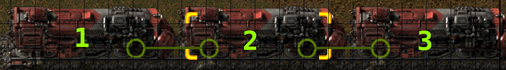

Yes, trains do perform collision checks on their directly connected neighbour. It does appear to be cheaper than a standard collision check, for an unknown reason.
Do trains perform collision checks on their directly connected neighbour? It is not possible for trains to collide with their directly connected neighbour. That is, rolling stock cannot hit the rolling stock they are directly attached to. 
In our example picture, rolling stock 2 cannot hit rolling stock 1 or 3. Theoretically, rolling stock 3 could hit rolling stock 1 (assuming magical rails), but under normal circumstances, these two would not be in the same 2x2 grid to perform the collision check.
For our test we will create 1000 locomotives. We will put them into trains of length 10, for a total of 100 trains. The other test scenario is to take those same trains, and split them into individual locomotives. Finally we will have a test case where we take those split locomotives and space them far apart. We will create a track where trains can go in a straight line, and is long enough that we can benchmark for our specified duration without the trains reaching the end. Another idea would be to control the order by which the trains are split, to ensure the front trains have a lower train id, thereby being updated first (among the same tick). This will not be tested here as we ought to keep our tests as atomic as possible.
We will deliberately orient the trains so they are not north, in order to maximize any performance differences, to make such data stand out. This was previously shown to have a difference in test-000015. As such, choosing a worst case scenario for collision checks would be ideal.
We will set the trains to automatic, all in the same tick, after which we will save the map. The below command performs that action.
/c
for key,ent in pairs (game.player.surface.find_entities_filtered{name="locomotive"}) do
ent.train.manual_mode = false
end
All trains in each map begin their journey, and as long as we do not run our tests longer than the time it would take for the trains to reach the end, data should be consistent.
For this test, we are specifically looking to see if trains perform collision checks against their directly connected neighbour. Thus, it does not make sense to test these maps in a --benchmark, since there are numerous other factors which could change performance that are not the specific thing we want to test here. To see the data we need, we will employ the callgrind profiler, and the kcachegrind visualizer.
There are numerous functions presented, but one that stands out is Train::collides(). It would be logical that our desired information resides here. This function is called once per tick per train. In our profile of a 500 tick benchmark, we see it called 500,000 times for the split trains, and 50,000 times for the connected train case, exactly in line with our assertation. Since Train::collides() is present on our case where wagons are split and spread apart, it is clear that this function alone is not responsible for performing collision checks in the 2x2 tile grid.
When we dig deeper into the child functions to Train::update(), things get more interesting.
The profile data in the connected case
The profile data in the split case
The profile data in the split and spread out case
The data generated here clearly and explicity shows that connected wagons do perform collision checks. Entity::collides() is nowhere to be seen on the third, spread out case. This means it was never called.
What is unexplained is why the split and close case spent much more time in Entity::collides(). Travelling down the child function chain eventually gets us to two functions, Math::sinUnsafe(), and MapPosition::rotate(). For some unknown reason, these two are called way more often on the split case. Logically, the expected number of calls to these function should be the same (since we have the same number of locomotives spaced the same distance apart). It could be worth investigating if changing the locomotive train id layout reduces the number of calls here. Locomotives further up the track would be updated first.
At exactly the same cost per call, calling these more than 4x as often is simply not ideal.
A curious cost.
A curious cost, but cheaper.
Another mild curiosity is the save file size for each case. The trains connected map had a save file of 6.8MB, versus roughly 12MB on the other two cases. This difference is not likely to matter in any real world case, but it is interesting nonetheless.
There is a collision checking cost to trains directly attached, but it is very likely not going to matter because if you use trains you are forced to pay the cost. A future test will cover the relative performance of varying train lengths.